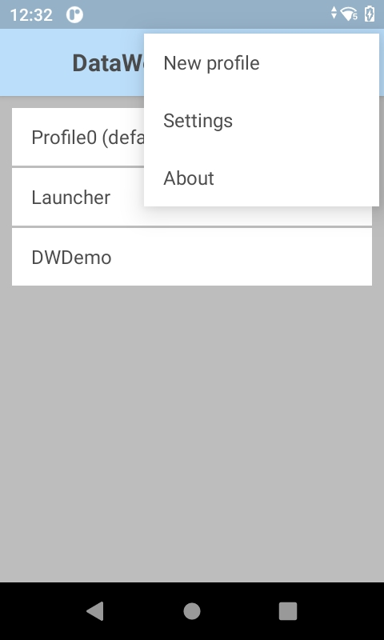

Overview
Zebra DataWedge is an application service that serves as a wedge between data capture and applications. It enables any application on the device to capture data from multiple input sources (such as barcode scanner, MSR, RFID, voice, and serial port) and format the data as needed using simple options or custom complex rules. DataWedge functionality is based on profiles - the foreground activity determines the set of configurations to apply from the profile. Profiles are configured manually or programmatically using Android intent APIs, with the capability for mass deployment. DataWedge is available out-of-the-box with every Zebra Android device.
Learn about Getting Started with DataWedge and see How Do I... for step-by-step procedures on how to perform common tasks to capture data.
Usage Notes and Behavior contain important information on the use of DataWedge.
Programmer's guide, Developer Articles and Blogs and Samples provides guidance on use of DataWedge intent APIs and best practices.
Introduction to DataWedge
The appearance of sample app screens displayed throughout this guide can vary by DataWedge version, Android version and screen size.
Important Information
NextGen SimulScan
NextGen SimulScan consists of major SimulScan capabilities migrated to the internal scanning framework accessible through DataWedge and DataWedge intent APIs. These capabilities are supported on certain Bluetooth scanners and all Zebra devices with built-in imager and/or camera running Android 8.x Oreo and higher. For Zebra Professional-series devices, such as TC21 and TC26, NextGen SimulScan requires a Mobility DNA Enterprise license. NextGen SimulScan features (formerly part of SimulScan) are:
- MultiBarcode - acquire multiple, unique barcodes in a single scan session and deliver scanned data either immediately or after the specified number of barcodes per scan is reached. Options currently available:
- Number of barcodes per scan:
- Set a fixed quantity of barcodes to scan
- Set a minimum and maximum number of barcodes to scan (introduced in DataWedge 11.1)
- Instant Reporting - instantaneously report unique barcodes within a scanning session. (Must not be confused with DataWedge Reporting that is deprecated.)
- Report decoded barcodes - report decoded barcodes in a single scan session.
- Number of barcodes per scan:
- Document Capture - scan a document based on a Document Capture/NextGen SimulScan template. Contact your local Zebra sales representative for assistance to create a Document Capture/NextGen SimulScan template, or starting with DataWedge 11.1, use one of the preloaded Document Capture templates.
See Simulscan Migration Alert for more information.
Voice Input Options Deprecated
The following Voice Input features are deprecated and will be discontinued in a future release:
- Data capture start option - Start phrase
- Data capture start phrase
- Data capture end phrase
As an alternative, Zebra recommends using the PTT button to trigger voice capture.
Reporting Deprecated
DataWedge Reporting is deprecated and will be discontinued on Zebra devices running Android 12, expected to be released in early 2022. (Must not be confused with Instant Reporting from MultiBarcode.) As an alternative, Zebra recommends using the following DataWedge intent APIs to identify the supported scanners and parameters:
- Enumerate Scanners - generates an index of scanners available on the device.
- Get Config - retrieves the
PARAM_LISTsettings, or the supported parameters, from the specified Profile; returned as a set of value pairs or a Plug-in config bundle. See Get Barcode Parameters for sample code.
Supported Peripheral Devices
External scanners and imagers are visible through the DataWedge UI based on the scanner framework version supported. Some examples are:
- DS2278
- DS3608
- DS3678
- DS8178
- DS9308
- LI3608
- LI3678
- RS507
- RS4000
- RS5000
- RS5100
- RS6000
Language Support
DataWedge has been approved to run on device operating systems localized for the following languages:
- English
- French
- German
- Italian
- Spanish
- Simplified Chinese
- Traditional Chinese
- Japanese
For more information about approved languages or to download a localized operating system, please contact Zebra Technical Support.
New in DataWedge 11.2
- New options to capture data when executing advanced tasks from a workflow process using Workflow Input with corresponding SetConfig API parameters and Workflow Input Programmer's Guide to retrieve data programmatically:
- OCR v1 (Early Access) - Mobility DNA OCR Wedge allows for the automatic recognition and capture of text in specific use cases and its conversion into digital data for delivery to any application. The specific use cases are: vehicle identification numbers (VIN), tire identification numbers (TIN), license plates and utility meters. Additionally, OCR can extract specific information from drivers licenses and identification cards.
- Image Capture - Free-Form Image Capture enables the built-in imager to capture an image and decode the barcode.
- New Barcode Highlighting feature provides on-screen feedback to identify the barcode being captured or aid in finding barcodes.
- New feature to open a URL when scanning a QR Code barcode with QRCode Launch options.
- New SWITCH_DATACAPTURE API to switch between barcode scanning and barcode highlighting or switch between workflow options. See corresponding Barcode Highlighting Programmer's Guide.
- New Workflow Status from Notification intent API to receive notifications of status changes related to Workflow Input and Barcode Highlighting.
- Added support for beep notification in Advanced Data Formatting (ADF) along with the capability to set the notification tone programmatically.
Version History
See Version History.
Which Version is Installed?
To determine which DataWedge version is installed on a device, perform one of the following:
A. Open the About screen in DataWedge. Instructions are provided below.B. Open App Info from DataWedge. Long press the DataWedge icon in the apps screen and tap App Info.
C. Use Get Version Info DataWedge intent API to retrieve the DataWedge version.
To open the About screen in DataWedge:
1. On the device, locate and tap the DataWedge icon in the Launcher screen or App Drawer:
 Launcher icon for DataWedge 6.x
Launcher icon for DataWedge 6.x
2. Tap the 3 dot menu icon. The DataWedge menu appears:

3. Tap About. The "About DataWedge" screen appears. The DataWedge version number is displayed. Notice that the Scanner Framework version also is shown - certain features may rely on the Scanner Framework version. See Feature Matrix for more information.
 The "About DataWedge" box showing version numbers
The "About DataWedge" box showing version numbers
4. If the DataWedge version on the device is different than that of this guide, return to the TechDocs tile page and select the appropriate version from the drop-down menu in the DataWedge tile.
It also might be helpful to visit the Zebra support site and download a device-specific Integrator Guide for reference.
Related Guides: